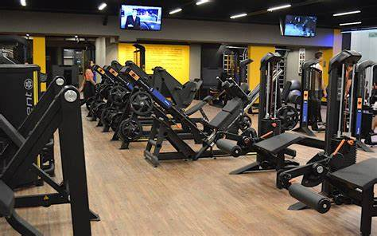
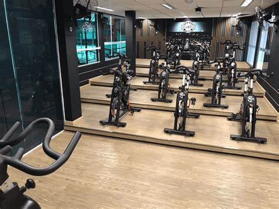
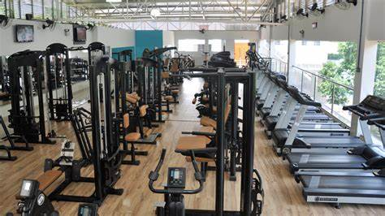

Academia

O crescimento da Academia é impulsionado pela demanda por educação de qualidade e avanços tecnológicos, resultando em mais estudantes, diversificação de campos de estudo e aumento da produção científica. No entanto, desafios como garantir acesso equitativo e manter padrões de qualidade precisam ser superados. É uma oportunidade para avançar o conhecimento, mas requer uma abordagem estratégica para garantir sustentabilidade e benefícios sociais.
Academia em Evolução

A Academia está em constante evolução devido à alta demanda por educação e pesquisa. Isso se reflete em mais instituições, estudantes e áreas de estudo. Avanços tecnológicos ampliam as possibilidades de aprendizado, mas desafios como acesso equitativo e qualidade persistem. A Academia em evolução oferece oportunidades para inovação e enfrentamento de desafios contemporâneos.
Construindo Pontes na Academia

Construindo Pontes na Academia é essencial para promover o crescimento da educação superior e pesquisa. Representa a colaboração entre disciplinas, instituições e países, impulsionando a inovação e a troca de conhecimentos. A construção de pontes facilita o crescimento inclusivo e sustentável da Academia.
Desvendando os Segredos da Academia
Desvendando os Segredos da Academia" destaca a importância de entender os fatores que impulsionam o crescimento da educação superior e pesquisa. Isso envolve investigar processos internos e externos para identificar oportunidades de melhoria e inovação. Ao desvendar esses segredos, é possível enfrentar desafios e crescer de forma consciente e estratégica.